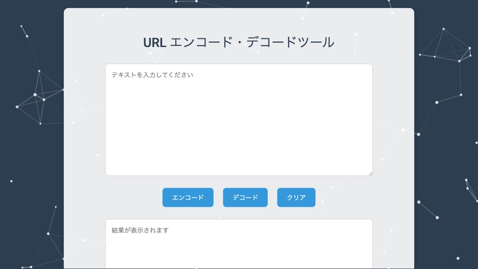

Web ツール
URLDecoder
URL のエンコードとデコードをブラウザーで行う、シンプルなユーティリティです。
公開根拠 入力を encodeURIComponent / decodeURIComponent で処理し、変換結果または失敗理由を出力欄に表示します。
根拠を見る （新しいタブで開きます） ↗
Web ツール
URL のエンコードとデコードをブラウザーで行う、シンプルなユーティリティです。
公開根拠 入力を encodeURIComponent / decodeURIComponent で処理し、変換結果または失敗理由を出力欄に表示します。
根拠を見る （新しいタブで開きます） ↗